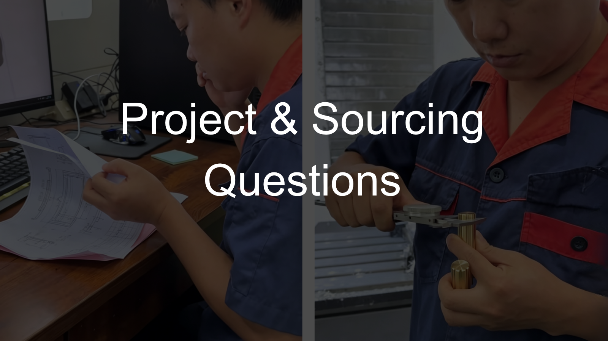
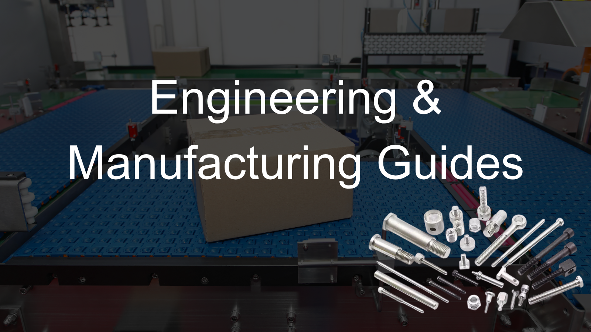

Project & Sourcing Questions
Manufacturing questions that often appear when a drawing-based component is already affecting sourcing, supplier decisions, engineering changes or repeat production.

Why Can the Same Custom Fastener Drawing Get Different Supplier Responses?
When the same drawing receives very different quotations, questions or manufacturing feedback, the difference may be worth reviewing from the manufacturing side.
Read Insight →Why Can a Simple-Looking Custom Fastener Be Difficult to Source?
When a simple-looking part repeatedly receives no-quotes, high MOQ or unusual pricing, the fit between the part requirements, manufacturing approach and project conditions may be worth reviewing.
Read Insight →Should a Drawing Requirement Change When a Supplier Says It Is Difficult to Manufacture?
When a supplier asks for a tolerance, feature or other requirement to be changed, the reason behind the manufacturing difficulty may be worth reviewing before the drawing is revised.
Read Insight →Why Can a Successful Prototype Still Be Difficult to Repeat in Production?
When a prototype passes but later batches become difficult to produce consistently, the difference between prototype conditions and repeat-production requirements may be worth reviewing.
Read Insight →Why Is the MOQ So High for a Custom Part?
When the quantity a project needs is much lower than the supplier MOQ, the conditions creating that minimum may be worth reviewing before it is treated as an unavoidable constraint of the part.
Read Insight →What Information Does a Manufacturer Need to Quote a Custom Part?
When a drawing is ready for quotation, the required quantity may be enough to begin in some cases, while specific sourcing or manufacturing situations may require additional project evidence.
Read Insight →What Should Be Reviewed When Changing Suppliers for a Custom Part?
When an established custom part moves to a new supplier or second source, the drawing remains the technical reference, but the source transfer may require additional manufacturing and verification review.
Read Insight →Why Does a Manufacturer Still Ask Questions When the Drawing Is Complete?
When a complete drawing still generates questions during quotation or manufacturing review, the issue may be the manufacturing context needed to evaluate the requirements rather than missing drawing information.
Read Insight →Engineering & Manufacturing Guides
Broader engineering and manufacturing guides for drawing review, replacement parts, equipment requirements and manufacturing process development.

What Should Engineers Review Before Moving a Custom Part From Drawing to Production?
When a completed drawing moves into manufacturing, evaluating critical tolerances and surface requirements is a necessary step before sampling or repeat production begins.
Read Insight →How Should Function-Critical Component Requirements Be Reviewed From the Manufacturing Side?
When several function-critical requirements affect fit, positioning, motion or other equipment functions, the manufacturing question is whether they can be produced, controlled and verified together.
Read Insight →Why Is Matching the Original Geometry Not Always Enough for a Replacement Part?
When an existing part needs to be reproduced, matching visible geometry alone may not establish whether the requirements that matter to its intended function have also been reproduced.
Read Insight →Why Can a Complete Drawing Still Require Manufacturing Process Development?
When a drawing defines several difficult requirements, manufacturing process development may still be needed to determine how those requirements can be achieved, controlled and repeated together.
Read Insight →